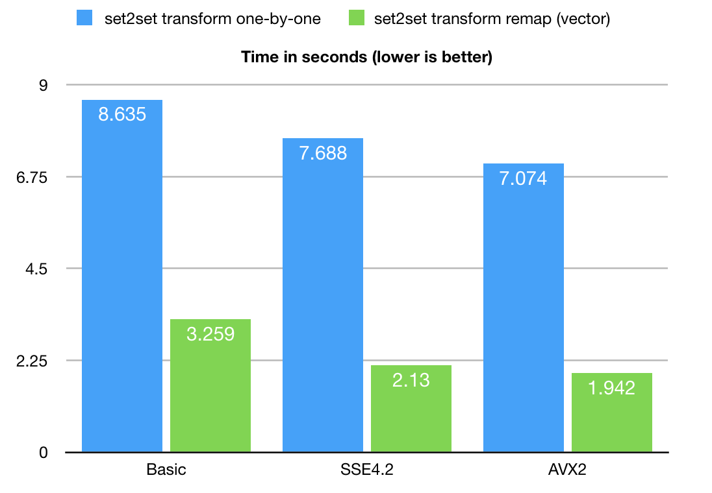

Optimization of the Set Associative Operations Using Bit-transposed Sparse Vector
Anatoliy Kuznetsov. July, 2018. anatoliy_kuznetsov@yahoo.com
Introduction
BitMagic Library implements functionality for fast and memory efficient set-to-set relations. Theory of Groups defines this functionality as an Image function. “Evaluating a function at each element of a subset X of the domain, produces a set called the image of X under or through the function.. In these definitions, f : X → Y is a function from the set X to the set Y.” https://en.wikipedia.org/wiki/Image_(mathematics)
Image may be defined as binary relations, not just functions. Such a binary relation function is often defined as a translation table. There are multiple implementations of translation tables from pure vector of pairs to sophisticated implementations of hash-maps or other forms of associative containers.
BitMagic Library sets a goal to implement containers and algorithms for memory-efficient set-to-set transformations.
Binary relations we describe here are 1:1 (one to one), 1:1 or NULL (one to one or one to NULL, where NULL is unassigned, non-existing value), M:1 (many to one). This relation can be expressed as translation tables and (kept in RAM, which becomes a commodity). Important characteristics of translation tables used in search and query systems are memory consumption and performance of translation lookups. BitMagic library tries to address both key aspects: minimize memory footprint using bit-transposed sparse vectors and develop cache optimized, SIMD aware algorithms to perform set associations without decompressing translation maps.
This technical note describes techniques for performance optimization and how it be improved by up to 4-5 times comparing to straight forward architecture-agnostic implementation.
Bit-transposed Sparse Vector
 BitMagic library provides container for bit-transposed integer data.
Bit-transposed representation of the data uses binary properties where each bit is stored using its own
bit vector, so internal layout is in fact a bit matrix (or a list of bit vectors).
Bit-transposed representation offers lower memory footprint in exchnage for more complicated access to
container elements. Each element naturally needs to be re-assembled from distinct bit vector memory blocks.
Optimization techniques of cache blocking and SIMD vectorization are employed to address this issue.
BitMagic library provides container for bit-transposed integer data.
Bit-transposed representation of the data uses binary properties where each bit is stored using its own
bit vector, so internal layout is in fact a bit matrix (or a list of bit vectors).
Bit-transposed representation offers lower memory footprint in exchnage for more complicated access to
container elements. Each element naturally needs to be re-assembled from distinct bit vector memory blocks.
Optimization techniques of cache blocking and SIMD vectorization are employed to address this issue.
BitMagic library employs the complex, parallel data structures with the goal that would allow effective memory savings, better RAM to CPU bandwidth (actually better bandwidth at any system level), better software parallelization with SIMD vectorization, tasks/theads and as an option parallel hardware utilization (GP-GPU and FPGA). Holistic system-wide optimization always have net positive effect and should start low, from data structures and algorithms.
Eventually the more facts and relationships we are able to fit - the smarter system we get.
Introductory Example
The example shows how to use bm::sparse_vector<> as an associative container for set translation algorithm
bm::set2set_11_transform<>.
#include <iostream>
#include <vector>
#include "bmsparsevec.h"
#include "bmsparsevec_algo.h"
using namespace std;
typedef bm::sparse_vector<bm::id_t, bm::bvector<> > sparse_vector_u32;
int main(void)
{
try
{
// initialize sparse_vector as a binary relation (transform function)
// to translate from one set to another (please note it uses NULL values)
//
sparse_vector_u32 sv_transform(bm::use_null);
// transformation function defined as a table:
// 2 -> 25, 3 -> 35, etc
sv_transform.set(2, 25);
sv_transform.set(3, 35);
sv_transform.set(7, 75);
sv_transform.set(1000, 2000);
sv_transform.set(256, 2001);
// initialize input bit-vector
//
bm::bvector<> bv_in { 1, 2, 3, 1000, 256 };
bm::bvector<> bv_out;
bm::set2set_11_transform func;
func.run(bv_in, sv_transform, bv_out);
}
catch(std::exception& ex)
{
std::cerr << ex.what() << std::endl;
return 1;
}
return 0;
}
In the example above we set translation table as a sparse vector and use
bm::set2set_11_transform<>
(#include "bmsparsevec_algo.h") to remap an input subset, defined as a bit vector into an output bit vector, that is set to set transformation.
The important note here is the use of NULL semantics which indicates unassigned values for 1:1 or NULL data models or M:1 or NULL. If the sparse vector is initialized not to use NULL semantics it will map all unassigned values to “0”, like it would do if we had a regular dense STL vector<> or pairs. For set-to-set translation purposes it is recommended to use NULL semantics. The sparse vector in this case would always keep an extra bit-vector for assigned non-null values. Not using NULL may be applicable when all values 0..SET_MAX are indeed assigned its output (dense 1:1 relationship).
Performance Evaluation
Lets review simple, linear one-by-one associative translation implementation (BitMagic v3.12.0).
typedef bm::sparse_vector<unsigned, bm::bvector<> > sparse_vector_u32;
bm::bvector<> bv_in;
bm::bvector<> bv_out;
sparse_vector_u32 sv_u32_in;
bm::set2set_11_transform<sparse_vector_u32> set2set;
{
typename sparse_vector_u32::bvector_type::enumerator en(bv_input.first());
for (; en.valid(); ++en)
{
bm::id_t in = *en;
bm::id_t out;
bool found = set2set.remap(in, sv_u32_in, out);
if (found)
{
bv_out.set(out);
}
}
}
Naïve set-to-set remapping algorithm would iterate the input bit-vector using bm::bvector<>::enumerator, get translated value and assign it to the output. This is understandable way of doing translation remapping, but it is not fast enough for bit-transposed matrices. The reason for slowness here is obvious, this method has to re-assemble every single translation word out of separate bit-vectors, without memory locality. Transposed bit-matrix is implemented as row major, while the algorith clearly uses column-major access to elements. The way contemporary CPU works is, it reads memory as cache lines into L3-L2-L1 levels of the CPU cache. The size of the CPU cache line is 64 bytes (Intel), the memory bandwidth overhead for the naïve method would be significant, we observed a great deal of cache thrashing, especially in SMT (hyperthreaded) situations, where threads are sharing the same L1 resource. Even a single-threaded benchmark is quite bad to mount an optimization attempt for this problem.
Optimization Objectives: Cache Locality
Number one priority is to exploit the L1 cache locality. This approach always returns maximum performance benefits without diving into the CPU specific SIMD vectorization. For set-to-set translation purposes it is done by processing groups of bits, belonging to one local memory block (sometimes called a tile or a bucket).
 Cache tiling technique is well described in the article by Intel Corp:
https://software.intel.com/en-us/articles/efficient-use-of-tiling.
Cache tiling technique is well described in the article by Intel Corp:
https://software.intel.com/en-us/articles/efficient-use-of-tiling.
BitMagic library is architected to store its sparse bit vectors as blocks of memory (65535 bits per block which is 8KB). One 8KB block surely fits into 32KB L1 cache, so algorithms can use this property to process block at a time. The input set gets split into chunks, for each block of addresses it runs an algorithm of gathering values from the bit vector planes. Cache blocking approach focuses on re-use of one group of bit blocks before moving to a different subset of translation set ids. This technique produces a streamlined, repeatable memory access pattern efficient for L1/L2 cache reuse.
Optimization Objectives: SIMD Optimizations
Before diving into SIMD optimization details, lets take a look at the gather-scatter algorithm in a nutshell, which is the key computational kernel of the problem. It happens to be just a few lines of code (real code, slightly massaged to get rid of non-essential details).
void bit_block_gather_scatter(unsigned* arr, const unsigned* blk,
const unsigned* idx, unsigned size, unsigned start, unsigned bit_idx)
{
for (unsigned k = 0; k < len; ++k)
{
unsigned nbit = unsigned(idx[start + k] & bm::set_block_mask);
arr[start + k] |= unsigned(bool(blk[nbit >> bm::set_word_shift] & (1u << (nbit & bm::set_word_mask))) << bit_idx);
}
}What is happening here? The algorithm checks bits defined by idx array and if set, assign 1 to bit position (bit_idx) in the target word, defined by the idx[k]. This describes de-transposition of one single bit plane. First call gathers bit position 0, second works with bit 1, 2, 3, up to the allocated native type capacity (32 for unsigned int). Target (arr) gets re-used in the CPU cache, input blocks are also rolled over. Index array is also re-used.
Slightly improved version of the same code would rely on loop unrolling and exploit super-scalar properties of modern CPUs (small optimization, but actually works well).
void bit_block_gather_scatter(unsigned* arr, const unsigned* blk,
const unsigned* idx, unsigned size, unsigned start, unsigned bit_idx)
{
const unsigned len = (size - start);
const unsigned len_unr = len - (len % 2);
unsigned k;
for (k = 0; k < len_unr; k+=2)
{
const unsigned base = start + k;
const unsigned nbitA = unsigned(idx[base] & bm::set_block_mask);
arr[base] |= unsigned(bool(blk[nbitA >> bm::set_word_shift] & (1u << (nbitA & bm::set_word_mask))) << bit_idx);
const unsigned nbitB = unsigned(idx[base + 1] & bm::set_block_mask);
arr[base+1] |= unsigned(bool(blk[nbitB >> bm::set_word_shift] & (1u << (nbitB & bm::set_word_mask))) << bit_idx);
}
for (unsigned k = 0; k < len; ++k)
{
unsigned nbit = unsigned(idx[start + k] & bm::set_block_mask);
arr[start + k] |= unsigned(bool(blk[nbit >> bm::set_word_shift] & (1u << (nbit & bm::set_word_mask))) << bit_idx);
}
}Please note, that the code above contains quite a lot of bitwise operations to calculate addresses for gathered index values, so it is not just memory intensive, but compute intensive as well. The code is initially branchless – good precursor to vectorize the algorithm.
BitMagic library 3.12.5 implements versions for SSE4.2 and AVX2 instruction sets.
Performance with SSE4.2 instruction set happens to be Ok, but slightly insufficient
due to missing vector shifts (or arguably insufficient effort from the author to do it well).
AVX2 happens to have vector shift intrinsic _mm256_sllv_epi32 so the code turns out
to be cleaner and more efficient.
AVX2 code for gather
void avx2_bit_block_gather_scatter(unsigned* arr,
const unsigned* blk,
const unsigned* idx,
unsigned size,
unsigned start,
unsigned bit_idx)
{
const unsigned unroll_factor = 8;
const unsigned len = (size - start);
const unsigned len_unr = len - (len % unroll_factor);
__m256i sb_mask = _mm256_set1_epi32(bm::set_block_mask);
__m256i sw_mask = _mm256_set1_epi32(bm::set_word_mask);
__m256i maskFF = _mm256_set1_epi32(~0u);
__m256i mask_tmp, mask_0;
unsigned BM_ALIGN32 mword_v[8] BM_ALIGN32ATTR;
unsigned k = 0, mask, w_idx;
for (; k < len_unr; k+=unroll_factor)
{
__m256i nbitA, nwordA;
const unsigned base = start + k;
__m256i* idx_ptr = (__m256i*)(idx+base); // idx[base]
nbitA = _mm256_and_si256 (_mm256_loadu_si256(idx_ptr), sb_mask); // nbit = idx[base] & bm::set_block_mask
nwordA = _mm256_srli_epi32 (nbitA, bm::set_word_shift); // nword = nbit >> bm::set_word_shift
// shufffle + permute to prepare comparison vector
mask_tmp = _mm256_shuffle_epi32 (nwordA, _MM_SHUFFLE(1,1,1,1));
mask_tmp = _mm256_permute2x128_si256 (mask_tmp, mask_tmp, 0);
mask = _mm256_movemask_epi8(_mm256_cmpeq_epi32(mask_tmp, nwordA));
_mm256_store_si256((__m256i*)mword_v, nwordA);
if (mask == ~0u) // all idxs belongs the same word avoid (costly) gather
{
w_idx = mword_v[0];
mask_tmp = _mm256_set1_epi32(blk[w_idx]); // use broadcast
}
else // gather for: blk[nword] (.. & mask0 )
{
mask_tmp = _mm256_set_epi32(blk[mword_v[7]], blk[mword_v[6]],
blk[mword_v[5]], blk[mword_v[4]],
blk[mword_v[3]], blk[mword_v[2]],
blk[mword_v[1]], blk[mword_v[0]]);
}
// mask0 = 1u << (nbit & bm::set_word_mask);
//
__m256i shiftA = _mm256_and_si256 (nbitA, sw_mask);
__m256i mask1 = _mm256_srli_epi32 (maskFF, 31);
mask_0 = _mm256_sllv_epi32(mask1, shiftA);
mask_tmp = _mm256_and_si256(mask_tmp, mask_0);
if (!_mm256_testz_si256(mask_tmp, mask_tmp)) // AND tests empty
{
__m256i* target_ptr = (__m256i*)(arr+base); // arr[base]
// bool(blk[nword] ... )
__m256i maskZ = _mm256_xor_si256(maskFF, maskFF); // all zero
mask1 = _mm256_slli_epi32(mask1, bit_idx); // << bit_idx
mask_tmp = _mm256_cmpeq_epi32 (mask_tmp, maskZ); // set 0xFF if==0
mask_tmp = _mm256_xor_si256 (mask_tmp, maskFF); // invert
mask_tmp = _mm256_and_si256 (mask_tmp, mask1);
_mm256_storeu_si256 (target_ptr, // arr[base] |= MASK_EXPR
_mm256_or_si256 (mask_tmp,
_mm256_loadu_si256(target_ptr)));
}
} // for
for (; k < len; ++k)
{
const unsigned base = start + k;
unsigned nbit = unsigned(idx[base] & bm::set_block_mask);
arr[base] |= unsigned(bool(blk[nbit >> bm::set_word_shift] & (1u << (nbit & bm::set_word_mask))) << bit_idx);
}
}
Benchmarking
 As you can see the biggest gain is coming from the use of cache-blocking technique. The optimization potential here is 4-5 times faster in large real life scenarios, comparing to naïve one-by-one implementation. This optimization technique can be used for pretty much any hash-map associative translation algorithms, where the input set can be structured to re-use hash buckets for multiple consecutive remaps. BitMagic internally uses blocks/buckets of memory, which naturally gives optimization/parallelization potential.
AVX2 code gives more than 30% performance boost over loop unrolled portable but superscalar friendly version (Listing 4).
Big-O ?
Formal Big-O analysis would evaluate both algorithms as basically linear O(N), where N is the number elements needed to be gathered-scattered. Second (optimized) variant would evaluate as O(N+k) or O(k*N), not sure, where k would present the number of extra passes we do over the index array to gather all values for each bit-plane. k depends on practical bit-depth (dynamic range actually) of sparse_vector<> in our example it was 30).
In practice cache coherent and parallel SIMD programming techniques may alter our Big-O conclusions by a huge margin. This margin is coming from the gap between CPU and memory speeds. The picture below is from publication by Carlos Carvalho.

Is it "Big-O considered harmful?" or "All models are wrong, but some are useful"?
Follow up Work
Gather-scatter algorithm can be further improved to process up to 4 bits at a time from multiple memory blocks (multi-way gather-scatter), saving on address calculations and still re-using L1 cache. Another potential optimization is to use AVX2 gather (note that improvised gather is used for now, native may be a better fit). Another promising opportunity would be to use Intel AVX-512 instruction set to use better parallelism and yet improved scatter-gather instructions.
How to Reproduce
- Download copy of BitMagic library v.3.12.6 (https://sourceforge.net/projects/bmagic/files/bmagic/bmagic3.12.5/ )
Or use GitHub repository https://github.com/tlk00/BitMagic - Build benchmark utility using GCC (Linux, MacOS, Cygwin)
(cd to BM root folder) . ./bmenv.sh cd utils/svutil make BMOPTFLAGS=-DBMAVX2OPT rebuild For SSE4.2 build use: make BMOPTFLAGS=-DBMSSE42OPT rebuild or just use
make rebuildto get basic version - Download and unzip the test set (extracted from a real search system) http://bitmagic.io/data/set2set.zip
- Run test and benchmark utility
./bmsvutil -svin set2set.sv -bvin query.bv -t
References
- Xingbo Wu, Fan Ni, Song Jiang. SearchLookasideBuffer: Efficient Caching for Index Data Structures
- Bevin Brett. Efficient use of Tiling
- Amanda S. Cache Blocking Techniques
- Carlos Carvalho. The Gap between Processor and Memory Speed